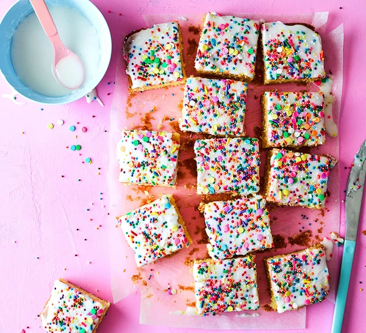

Sprinkle Cake

Ingredients
- 200g butter
- 200g caster sugar
- 4 large eggs
- 200g self-raising flour
- 200g icing sugar
Steps
-
Heat the oven to 180C/160C fan/gas 4. Butter a 20 x 30cm cake tin and line
with baking parchment. Put the butter and sugar in a large bowl and beat
with an electric whisk for a few minutes until pale and fluffy. Add the
eggs, flour, milk and vanilla and beat again until you have a smooth batter.
-
Scrape the batter into the prepared tin, spread right to the corners and
smooth the surface. Bake for 40-45 mins or until a skewer inserted into the
centre comes out clean, checking at 5 min intervals if it isn't ready after
45 mins. Leave the sponge to cool on a wire rack.
-
Mix the icing sugar with enough water to make a thick icing. Spread the
icing over the cooled cake, then top with lots of sprinkles – the surface
should be almost completely covered. Leave for at least 1 hr to set. Cut
into squares and serve with hot custard, if you like.